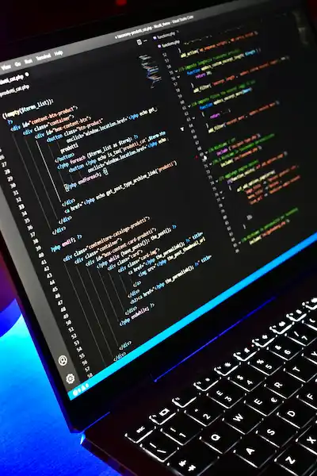

Exploring Web Development
In this section, we delve into the fundamentals of web development, covering essential topics such as HTML, CSS, and JavaScript. You'll learn how to create responsive layouts, style your pages effectively, and add interactivity to enhance user experience. This foundational knowledge is crucial for anyone looking to build dynamic websites.
Best Practices in Web Design
This section focuses on best practices in web design, emphasizing the importance of usability, accessibility, and aesthetics. We will explore design principles such as contrast, alignment, and proximity, and how they contribute to a cohesive user experience. By following these guidelines, you can create visually appealing and user-friendly websites that engage your audience.